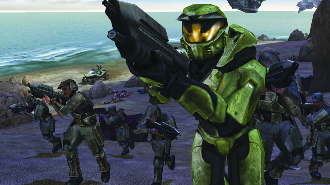

Шутеры позволяют игрокам использовать в своих действиях оружие, обычно с целью уничтожить врагов или противоборствующих игроков.
Шутеры делятся по ракурсу обзора игрока. В шутерах от первого лица (FPS – Frst-person shooter) вид из глаз главного персонажа. Типичными примерами являются Call of Duty, Half-Life и Halo. В шутерах от третьего лица типа Fortnite и Splatoon действие показано так, что игрок может видеть главного персонажа, обычно чуть сверху и сзади.
Шутеры с видом сверху, например, Galaga, Space Invaders и Raiden V: Director’s Cut, как и следует из названия, демонстрируют нам вид полностью сверху. И если в шутерах от третьего лица обычно используется шкала здоровья, которая растет или уменьшается в зависимости от уровня здоровья или состояния персонажа, то в шутерах с видом сверху часто применяется принцип с некоторым количеством «жизней», когда надпись Game Over появляется после исчерпания их запаса.